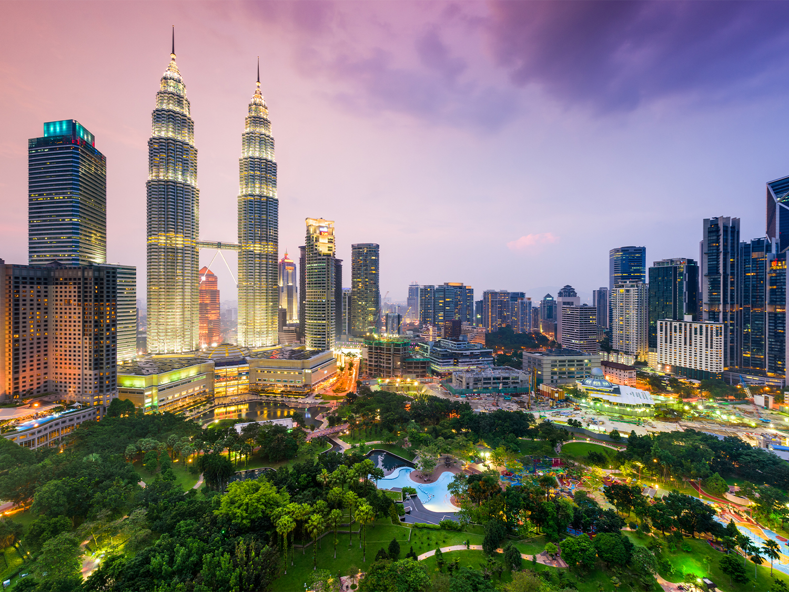

Estimated daily budget: $55
Best time to visit: Summer
Malaysia is a vibrant, budget-friendly melting pot where ultra-modern skyscrapers stand alongside ancient rainforests, pristine beaches, and some of the world's most famous street food
Quick Facts
Budget
$55/day
Best Time
Summer
Region
SE Asia
Why Malaysia?
Malaysia is a diverse Southeast Asian nation split into two distinct regions by the South China Sea: the bustling, modern Peninsular Malaysia and the wild, rugged Malaysian Borneo. Visitors can transition seamlessly from shopping in futuristic megacities to trekking through pristine jungles that are home to wild orangutans. It stands out as an exceptionally budget-friendly destination where Malay, Chinese, Indian, and indigenous cultures blend harmoniously, creating a world-renowned paradise for food lovers and cultural explorers alike.
Places to Explore
Kuala Lumpur
Kuala Lumpur is Malaysia's dynamic, sky-scraping capital where tourists can marvel at the iconic Petronas Twin Towers, climb the colorful steps of the ancient Batu Caves, and feast through endless night markets.
George Town
George Town is the vibrant, historic heart of Penang island, pulling travelers in with its world-famous street food, mesmerizing street art trail, and beautifully preserved UNESCO-listed colonial architecture.
Malacca
Malacca is a captivating riverside UNESCO World Heritage site where history buffs can explore centuries of Portuguese, Dutch, and British colonial ruins while diving into the unique, flavorful world of Peranakan culture.
Travel Tips
- Dress modestly for temples by carrying a lightweight sarong or scarf to cover your shoulders and knees.
- Download the Grab app before arriving to secure safe, affordable rides and food deliveries anywhere in the country.
- Carry small cash bills because while cards are common in malls, traditional street food stalls and markets only accept cash.
